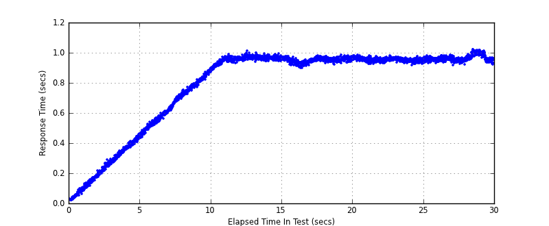
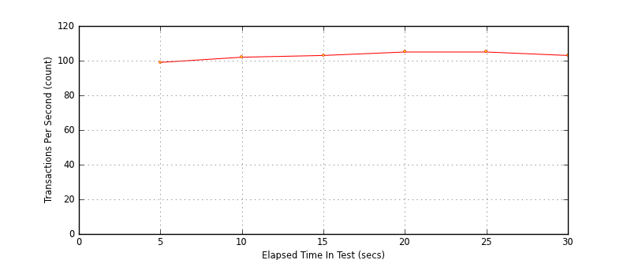
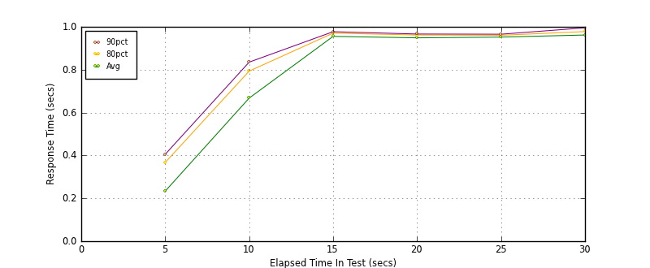
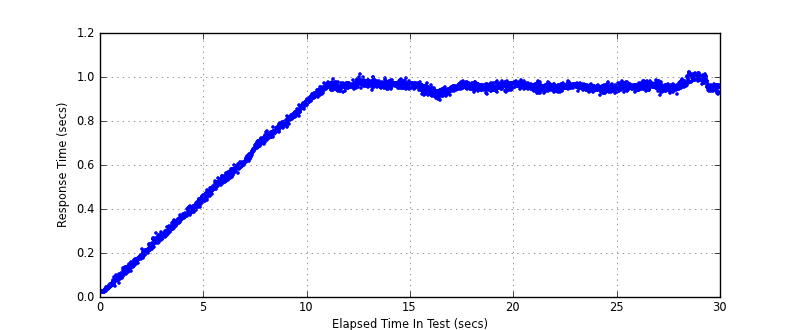

Performance Results Report
Summary
transactions: 3192
errors: 0
run time: 30 secs
rampup: 10 secs
test start: 2014-01-24 11:05:50
test finish: 2014-01-24 11:06:20
time-series interval: 5 secs
workload configuration:
| group name | threads | script name |
|---|
| user_group-1 | 100 | read_user.py |
All Transactions
Transaction Response Summary (secs)
| count | min | avg | 80pct | 90pct | 95pct | max | stdev |
|---|
| 3192 | 0.019 | 0.792 | 0.962 | 0.970 | 0.978 | 1.022 | 0.275 |
Interval Details (secs)
| interval | count | rate | min | avg | 80pct | 90pct | 95pct | max | stdev |
|---|
| 1 | 496 | 99.20 | 0.019 | 0.234 | 0.368 | 0.405 | 0.424 | 0.463 | 0.126 |
| 2 | 510 | 102.00 | 0.435 | 0.668 | 0.794 | 0.835 | 0.865 | 0.894 | 0.126 |
| 3 | 519 | 103.80 | 0.882 | 0.956 | 0.971 | 0.977 | 0.982 | 1.012 | 0.022 |
| 4 | 526 | 105.20 | 0.896 | 0.949 | 0.962 | 0.967 | 0.971 | 0.982 | 0.015 |
| 5 | 526 | 105.20 | 0.915 | 0.952 | 0.961 | 0.966 | 0.970 | 0.983 | 0.011 |
| 6 | 515 | 103.00 | 0.915 | 0.962 | 0.978 | 0.995 | 1.003 | 1.022 | 0.020 |
Graphs
Response Time: 5 sec time-series
Response Time: raw data (all points)

Throughput: 5 sec time-series

Custom Timer: get_tweets
Timer Summary (secs)
| count | min | avg | 80pct | 90pct | 95pct | max | stdev |
|---|
| 3092 | 0.019 | 0.791 | 0.962 | 0.970 | 0.978 | 1.022 | 0.275 |
Interval Details (secs)
| interval | count | rate | min | avg | 80pct | 90pct | 95pct | max | stdev |
|---|
| 1 | 496 | 99.20 | 0.019 | 0.233 | 0.367 | 0.405 | 0.424 | 0.462 | 0.126 |
| 2 | 510 | 102.00 | 0.435 | 0.667 | 0.793 | 0.835 | 0.865 | 0.894 | 0.126 |
| 3 | 519 | 103.80 | 0.881 | 0.955 | 0.971 | 0.977 | 0.982 | 1.011 | 0.022 |
| 4 | 526 | 105.20 | 0.895 | 0.949 | 0.962 | 0.966 | 0.970 | 0.982 | 0.015 |
| 5 | 526 | 105.20 | 0.915 | 0.952 | 0.961 | 0.965 | 0.970 | 0.983 | 0.011 |
| 6 | 515 | 103.00 | 0.914 | 0.962 | 0.978 | 0.995 | 1.003 | 1.022 | 0.020 |
Graphs
Response Time: 5 sec time-series

Response Time: raw data (all points)

Throughput: 5 sec time-series